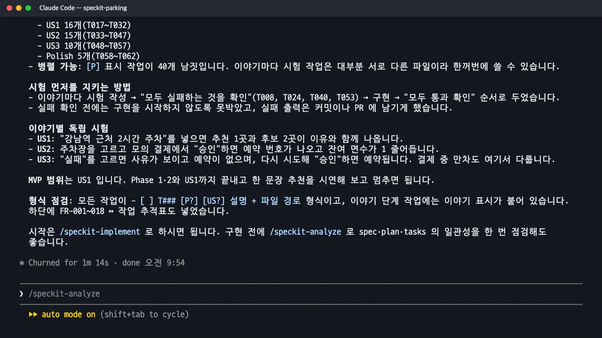
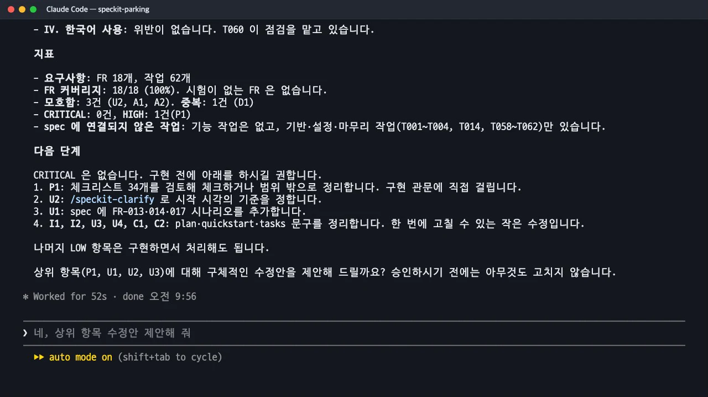

/speckit-tasks가 사양과 계획을 63개 작업으로 나눕니다.- [ ] T017 [P] [US1] …한 줄에 담긴 뜻, 사용자 이야기별 단계, 병렬 표시[P]의 조건을 봅니다. 이어서/speckit-analyze가 사양·계획·작업 세 문서를 대조해 찾아낸 문제와, 수정을 승인하는 과정까지 봅니다.
무엇을 · 왜#
작업 목록은 구현 에이전트가 그대로 따라갈 실행 계획입니다. 그래서 형식이 엄격합니다.
- [ ] T017 [P] [US1] 문장 해석 시험 `backend/src/test/java/kr/parking/query/QueryParserTest.java`: … (FR-001, FR-002)
│ │ │ │ └ 할 일과 정확한 파일 경로
│ │ │ └ 어느 사용자 이야기의 작업인가 (이야기 단계에만)
│ │ └ 병렬 가능 (다른 파일이고, 끝나지 않은 작업에 기대지 않을 때만)
│ └ 실행 순서대로 붙는 번호
└ 체크박스. 구현이 끝나면 [X]
단계는 정해져 있습니다.
| 단계 | 내용 | 이 실습 |
|---|---|---|
| Phase 1 · Setup | 프로젝트 뼈대 | T001~T004 |
| Phase 2 · Foundational | 모든 이야기의 공통 기반. 완료 전에는 이야기를 시작하지 않습니다 | T005~T016 |
| Phase 3 · US1 (P1) 🎯 MVP | 한 문장으로 추천받기 | T017~T032 |
| Phase 4 · US2 (P2) | 모의 결제 후 예약 확정 | T033~T047 (+T033a) |
| Phase 5 · US3 (P3) | 결제 실패 안내와 재시도 | T048~T057 |
| Phase 6 · Polish | 추적표·한국어·범위 점검 | T058~T062 |
Spec Kit의 작업 목록 규칙에서 시험 작업은 선택입니다. 사양에서 요청하거나 TDD를 요청한 경우에만 넣습니다. 이 실습은 헌법 I 「시험 먼저」가 있어서 모든 이야기가 같은 순서를 갖습니다.
시험 작성 [P] 여러 개 → 실패 확인(T024) → 구현 → 통과 확인(T032)
따라 하기#
- 작업 목록을 만듭니다. 인자 없이
/speckit-tasks를 실행합니다. 1분 14초 뒤 62개 작업(나중에 T033a가 더해져 63개)이 나왔고, 그중[P]가 43개입니다. 맨 아래에는 단계 사이 의존 관계, 병렬 실행 예, MVP 우선 전략, FR ↔ 작업 추적표가 붙습니다.
작업 목록 요약: 단계별 작업 수, 시험 먼저 순서, MVP 범위 - 일관성 분석을 실행합니다.
/speckit-analyze는 아무 파일도 고치지 않고 보고서만 냅니다. 이 실습의 결과는 FR 커버리지 18/18(100%), 모호함 3건, 중복 1건, CRITICAL 0건, HIGH 1건이었습니다.
일관성 분석 보고서의 헌법 점검·지표·다음 단계 - 수정안을 제안받고 승인합니다. 보고서 끝에 "상위 항목의 수정안을 제안할까요? 승인하기 전에는 아무것도 고치지 않습니다"라고 묻습니다. 제안을 받아 보니 시작 시각의 기준을 「결제 승인 시점」으로 정하자는 권고(U2)가 있었고, 이를 승인했습니다.
네, 상위 항목 수정안 제안해 줘 네, 승인 시점으로 적용해 줘
일관성 분석이 보는 것#
/speckit-analyze는 세 문서와 헌법을 읽어 여섯 가지를 찾습니다.
| 찾는 것 | 예 |
|---|---|
| 중복 | 거의 같은 요구사항 두 개 |
| 모호함 | 수치 없는 형용사("빠른", "견고한"), 남은 TODO |
| 덜 정해짐 | 결과가 없는 요구사항, 인수 기준과 맞지 않는 이야기, 사양·계획에 없는 파일을 가리키는 작업 |
| 헌법 위반 | MUST 원칙과 충돌하는 요구사항이나 계획 |
| 커버리지 공백 | 작업이 없는 요구사항, 요구사항이 없는 작업, 작업에 반영되지 않은 성공 기준 |
| 불일치 | 같은 개념의 다른 이름, 한쪽에만 있는 엔터티, 앞뒤가 바뀐 작업 순서 |
심각도는 네 단계입니다. 헌법 MUST 위반은 무조건 CRITICAL입니다. 원칙을 바꿔야 한다면 분석 중에 임의로 해석을 바꾸지 말고, 헌법을 따로 고치라고 정해 두었습니다.
산출물과 바뀐 점#
① 분석 보고서(이 실습). 파일로 남지 않고 화면에만 나옵니다.
| ID | 구분 | 심각도 | 내용 |
|---|---|---|---|
| P1 | 절차 | HIGH | 예약·결제 체크리스트 34개가 모두 미체크. /speckit-implement는 체크리스트를 관문으로 확인합니다 |
| I1 | 불일치 | MEDIUM | plan.md는 "인수 시나리오 10개", "FR-001~016"이라고 하는데 사양은 시나리오 8개, FR-018까지 |
| U1 | 누락 | MEDIUM | FR-013(중복 요청)·FR-014(면수 감소)·FR-017(결제 중 만차)에 Given/When/Then 시나리오가 없습니다 |
| U2 | 모호함 | MEDIUM | 이용 시작이 사양은 「입력 시점」, 데이터 모델은 「결제 요청 시각」. 영업 종료 직전이면 영업시간 밖 예약이 생길 수 있습니다 |
| U3 | 누락 | MEDIUM | 결제 요청에서 영업시간·최대 이용 시간·1km를 다시 확인하는 작업이 없습니다. 조작된 요청으로 FR-003을 우회할 수 있습니다 |
| C1 | 커버리지 | MEDIUM | SC-001(10초)에 자동 시험이 없고 수동 확인뿐입니다 |
| C2 | 커버리지 | LOW | quickstart는 ./mvnw를 쓰는데 Maven wrapper를 만드는 작업이 없습니다 |
그 밖에 MEDIUM 2건(I2 추적표의 시험 이름 불일치, U4 오류 형식 시험의 위치)과 LOW 3건(A1 예약 번호 순번, A2 「한 번의 동작」 기준, D1 중복)이 있었습니다.
② 승인 뒤 바뀐 것. 일곱 개 문서가 함께 고쳐졌습니다.
spec.md: 새 FR-019(결제 승인 시점에 이용 가능 여부 재확인), 인수 시나리오 3개 추가(US2-3 중복 요청, US2-4 면수 감소, US3-3 결제 중 만차)로 8개 → 11개, 가정 4줄 추가.tasks.md: 번호를 밀지 않으려고 T033a(재확인 시험)를 끼워 넣고, T044 설명을 고치고, 추적표에 FR-019 행을 더했습니다.contracts/api.md:400 LOT_UNAVAILABLE응답 추가.data-model.md의startAt은 결제 승인 시점으로.
분석은 고치지 않는다, 사람이 승인한다
분석 스킬의 규칙은 "엄격히 읽기 전용"입니다. 고칠지 말지는 사람이 정합니다. 이 실습에서 Claude는 제안 때 U3를 "사양 변경 없음"이라고 했다가, 적용하면서 "승인 시점 기준이 가정에만 있으면 요구사항으로 남지 않는다"며 FR-019로 추가했다고 따로 밝혔습니다. 제안과 적용 결과가 다를 수 있으니 적용 뒤의 요약도 꼭 읽으세요.
확인 문제#
`[P]`는 어떤 작업에만 붙나요?
다른 파일을 고치고, 아직 끝나지 않은 작업에 의존하지 않는 작업에만 붙습니다. 같은 파일을 고치는 작업(예: ReservationService.java를 고치는 T043·T054·T055)은 [P]가 있어도 순서대로 해야 합니다. 구현 스킬도 "같은 파일을 수정하는 작업은 순서대로"를 따로 지킵니다.
헌법에 「시험 먼저」가 없었다면 Phase 3에는 어떤 작업이 빠졌을까요?
T017~T023 같은 시험 작성 작업과 T024(실패 확인), T032(통과 확인)가 빠졌을 수 있습니다. 작업 목록 규칙에서 시험은 선택이고, 사양이나 사용자가 요청할 때만 넣기 때문입니다.
`/speckit-analyze`가 HIGH를 냈는데 고치지 않고 구현으로 넘어가도 되나요?
넘어갈 수 있습니다. 분석은 보고만 하고 막지 않습니다. 다만 CRITICAL(헌법 위반 등)이 있으면 구현 전에 해결하라고 권합니다. 이 실습의 HIGH(P1, 체크리스트 미체크)는 실제로 다음 장의 구현 관문에서 다시 나타났습니다.